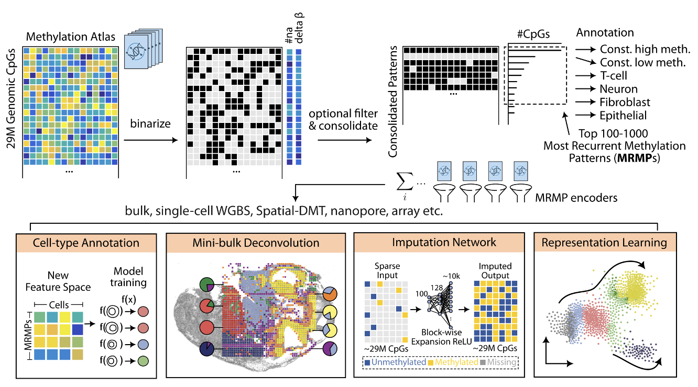

MethScope is an R package for ultra-fast analysis of sparse DNA methylome data using Most Recurrent Methylation Patterns (MRMPs).
It supports downstream analysis for cell type annotation, cell type deconvolution, unsupervised clustering, cancer cell-of-origin prediction, and missing value imputation.

Method Overview
Sparse single-cell and spatial methylome data are often too sparse to analyze directly at individual CpG resolution. MethScope converts high-dimensional methylation atlas signals into compact MRMP features, then uses these features for fast downstream modeling.
Core workflow:
- Binarize methylation atlas profiles and consolidate recurrent methylation patterns
- Select top recurrent methylation patterns as MRMP features
- Encode each sample, cell, or spatial pixel into an MRMP-based representation
- Run downstream modeling for annotation, deconvolution, imputation, and representation learning
Supported Workflows
- Cell-type annotation in sparse single-cell methylome profiles
- Mini-bulk deconvolution for mixed-cell samples
- Missing-value imputation for sparse CpG measurements
- Representation learning for clustering and embedding analysis
- Cancer cell-of-origin prediction
Data Preparation
MethScope uses YAME .cg files as methylation input. If your data are currently stored as BED-like methylation calls, ALLC files, beta/fraction tables, or binary tracks, see the conversion tutorial:
Quick Start
library(MethScope)
# Run this from the root of a cloned zhou-lab/MethScope repository.
example_file <- "inst/extdata/example.cg"
reference_pattern <- "inst/extdata/mm10_Liu2021.cm"
input_pattern <- GenerateInput(example_file, reference_pattern)
model <- Liu2021_MouseBrain_P1000()
prediction_result <- PredictCellType(model, input_pattern)The GitHub repository includes inst/extdata/example.cg for functional testing and cell-type prediction. CRAN packages have size limits, so the CRAN release contains only tiny toy files.
GitHub reference .cm files are named by genome build and source dataset:
-
inst/extdata/mm10_Liu2021.cm: mouse brain MRMP reference -
inst/extdata/hg38_Zhou2025.cm: human atlas MRMP reference -
inst/extdata/hg38_Loyfer2023.cm: human atlas MRMP reference from Loyfer et al.
The full mm10_Liu2021.cm reference contains more than 1000 MRMPs; the built-in mouse brain model uses the first 1000 patterns.
Installation
Install from CRAN:
install.packages("MethScope")Or install the development version from GitHub:
# install.packages("devtools")
devtools::install_github("zhou-lab/MethScope")